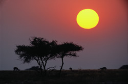
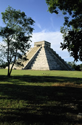
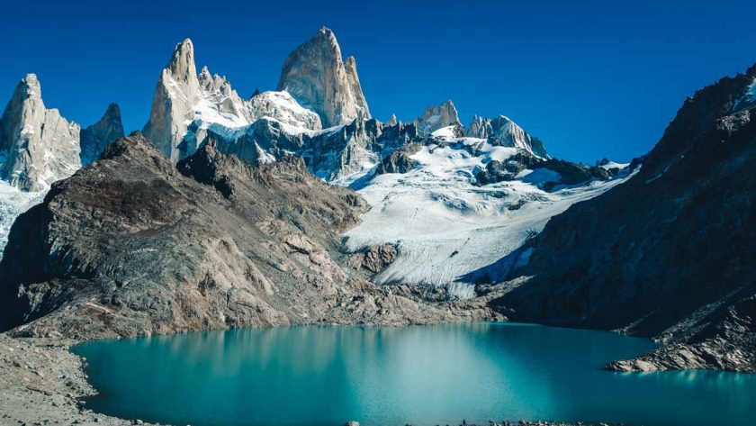
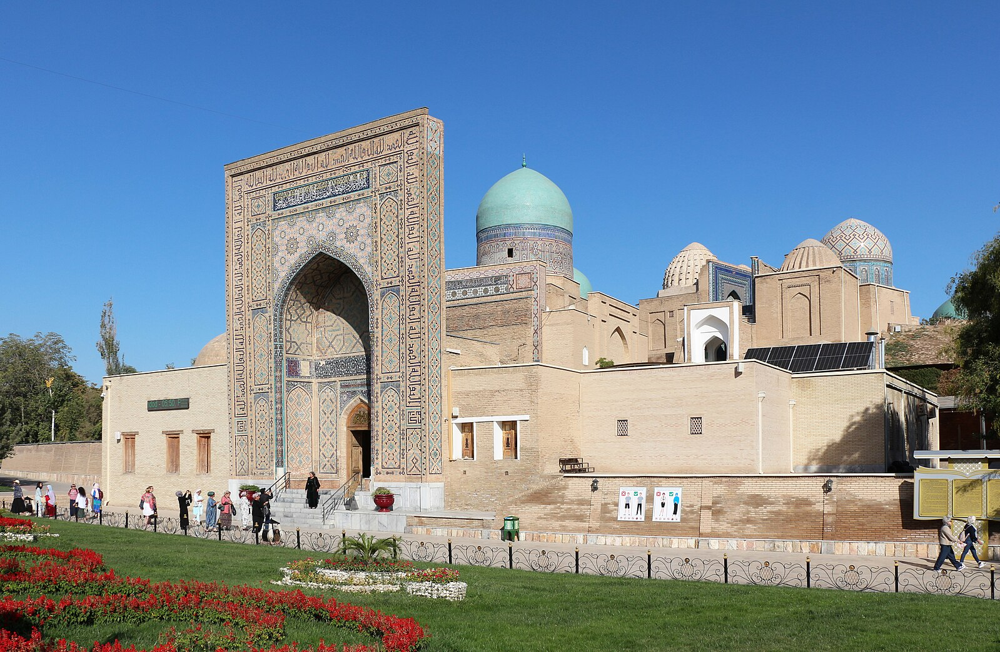
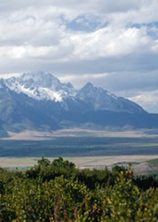
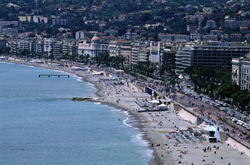

Etosha National Park
Tour I.D. #: 13
Tour Description:
Explore one of Africa's greatest national parks. See exotic African wildlife--giraffes, elephants, leopards, antelope--as they were meant to be seen. Some hiking required.
Image Caption: Etosha National Park, Namibia
Country: Namibia
Number of Nights: 6
Meals Per Day Included: 3
Exercise Required? Yes
Itinerary:
Windhoek: 1 night
Etosha National Park: 5 nights
Yucatan Escape
Tour I.D. #: 11
Tour Description:
This tour consists of seven day trips, which take you to two worlds. The world of today is modern Cancun, a resort town with beaches, bars, and fun. Then go back in time, as you tour the ancient ruins of the storied Mayan civilization in Chichen Itza.
Image Caption: Mayan pyramid, Yucatan Peninsula, Mexico
Country: Mexico
Number of Nights: 7
Meals Per Day Included: 2
Exercise Required? No
Itinerary:
Cancun: 7 nights
 Highlights of the US East Coast
Highlights of the US East Coast
Tour I.D. #: 18
Tour Description:
From the Washington Monument to the Statue of Liberty, see the most famous USA landmarks including the White House, the Liberty Bell, Wall Street, and Boston Harbor.
Image Caption: Statue of Liberty, New York City, USA
Country: United States
Number of Nights: 8
Meals Per Day Included: 2
Exercise Required? No
Itinerary:
Washington, D.C.: 2 nights
Philadelphia: 2 nights
New York City: 2 nights
Boston: 2 nights
 California Inline!
California Inline!
Tour I.D. #: 19
Tour Description:
Inline skate your way through sunny California. Skate along San Francisco's Fisherman's Wharf and San Diego's Mission Bay. In addition to long skates, you'll visit a skate park, where you can practice jumps and grinds, with a fully qualified instructor.
Image Caption: Golden Gate Bridge at night, San Francisco, USA
Country: United States
Number of Nights: 7
Meals Per Day Included:2
Exercise Required? Yes
Itinerary:
San Francisco: 2 nights
Monterey: 1 night
San Diego: 4 nights
Highlights of Patagonia
Tour I.D. #: 11
Tour Description:
Patagonia (Spanish pronunciation: [pataˈɣonja]) is a geographical region that encompasses the southern end of South America, governed by Argentina and Chile.
Image Caption:Marinelli Glacier, Chile
Country: Chile
Number of Nights: 7
Meals Per Day Included: 2
Exercise Required? No
Itinerary:
Marinelli Glacier: 3 nights
Shah-i-Zinda
Tour I.D. #: 12
Tour Description:
The Shah-i-Zinda Ensemble includes mausoleums and other ritual buildings of 11th – 15th and 19th centuries. The name Shah-i-Zinda (meaning "The living king") is connected with the legend that Qutham ibn Abbas, a cousin of Muhammad, is buried here. He came to Samarkand with the Arab invasion in the 7th century to preach Islam.
Image Caption: Shah-i-Zinda, Samarkand, Uzbekistan
Country: Uzbekistan
Number of Nights: 7
Meals Per Day Included: 2
Exercise Required? No
Itinerary:
Samarkand: 7 nights
Hiking Hokkaido
Tour I.D. #: 3
Tour Description:
Explore the untamed wilds of Japan's northern frontier, in these seven one-day hiking expeditions. Hike beneath Hokkaido's legendary snow-capped peaks. Serious hikers only!
Image Caption: Snow-capped mountains of Hokkaido, Japan
Country: Japan
Number of Nights: 7
Meals Per Day Included: 3
Exercise Required? Yes
Itinerary:
Sapporo: 3 nights
Daisetsuzan National Park: 4 nights
Highlights of Israel
Tour I.D. #: 16
Tour Description:
In this seven-day tour of Israel, you will see Christianity's, Islam's, and Judaism's most sacred sites. Visit the Wailing Wall, the traditional birthplace of David and Jesus, and much more.
Image Caption: Wailing Wall and vicinity, Jerusalem
Country: Israel
Number of Nights: 7
Meals Per Day Included: 2
Exercise Required? No
Itinerary:
Jerusalem: 7 nights
Jericho [day trip]
Bethlehem [day trip]
Highlights of the United Kingdom
Tour I.D. #: 7
Tour Description:
From Big Ben to Edinburgh Castle, experience the United Kingdom's finest from the Dark Ages to the present. An ideal trip for the whole family.
Image Caption: London's Big Ben clocktower
Country: The United Kingdom
Number of Nights: 6
Meals Per Day Included: 2
Exercise Required? No
Itinerary:
London: 3 nights
Oxford: 1 nights
Edinburgh: 2 nights
Conquer the Riviera
Tour I.D. #: 6
Tour Description:
Hike from heaven to paradise, in this six-day journey on foot from Cannes to Nice.
Image Caption: The resort beaches of the French Riviera
Country: France
Number of Nights: 6
Meals Per Day Included: 3
Exercise Required? Yes
Itinerary:
Cannes: 1 night
[Between Cannes and Nice]: 4 nights
Nice: 1 night